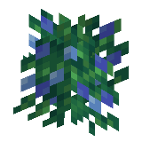
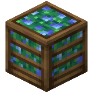

About
Blueberries are food items obtained from blueberry bushes and are used to plant new bushes.
Blueberry bushes are quick-growing plants that grow blueberries. These bushes can be harvested to obtain more blueberries. Players and most mobs are slowed down while moving through these berry bushes. Unlike sweet berry bushes, blueberry bushes do not damage players or mobs.
Obtaining
Natural Generation
Blueberry bushes can be found in forest biomes.
Breaking
Blueberry bushes can be mined instantly with any tool or by hand. A mature blueberry bush yields 2–3 berries. On its third growth stage, the bush yields 1–2 berries. Each level of Fortune can increase the amount of drops by 1.
Harvesting
Blueberries can be collected from a blueberry bush by pressing the use control on it, yielding 1–2 blueberries in its third growth stage, and 2–3 blueberries in its final growth stage. After dropping the blueberries on the ground, the blueberry bush reverts to its second growth stage.
Usage
Growth
Like sweet berry bushes, these bushes can be grown and multiplied using bone meal.
Placement
Blueberries can be planted any blocks that sweet berry bushes can be planted on.
Any blocks added to the minecraft:supports_vegetation tag are also supported.
Food
To eat blueberries, press and hold use while it is selected in the hotbar. Eating one restores 2 hunger (1 drumstick) and 0.4 saturation.
Crafting


Craft blueberry juice in a crafting table by placing blueberries in a plus shape around a central glass bottle.
Technical
Configuration
Toggles the world generation and availability of blueberries, blueberry bushes, blueberry juice, and blueberry pies.
- In-Game Screen Name: Enable Blueberries
-
Config File Key:
enable_blueberriestrue/Yes: Enabled (Default)false/No: Disabled and hidden
Blueberries

| Consumption Time | 32 game ticks (1.6 seconds) |
| Renewable | Yes (Berry Bushes) |
| Stackable | Yes (64) |
| Hunger | 2 drumsticks |
| Saturation | 0.8 |
| Always Consumable | No |

| Tool | Any tool |
| Biome | Forests |
| Blast Resistance | 0 |
| Hardness | 0 |
| Luminous | No |
| Transparent | Yes |
| Catches fire from lava | No |
| Can be grown with bone meal | Yes |

| Renewable | Yes (Crafting) |
| Stackable | Yes (64) |
| Blast resistance | 3 |
| Hardness | 2 |
| Luminous | No |
| Flammable | Yes |
| Catches fire from lava | Yes |
| Note block instrument | Bass |
| Sulfur cube archetype | Fast Flat |